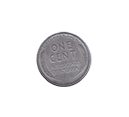
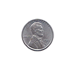

Pennies

The 1943 steel cent, also known as a steel war penny or steelie, was a variety of the U.S. one-cent coin which was struck in steel due to wartime shortages of copper. It used the same design that Victor David Brenner had made in 1909 for the copper Lincoln cent.
Year: 1943
Mint Mark: No mint mark
Face Value: 0.01 USD
Total Produced: 684,628,000 [?]
Silver Content: 0%
Numismatic Value: 45 cents to $10.00